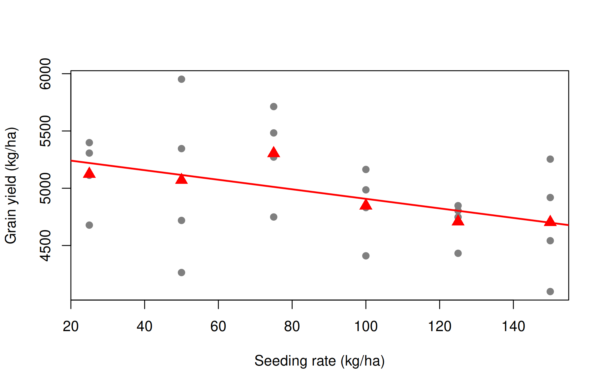

Define contrasts and orthogonality, partition a treatment sum of squares into single-degree-of-freedom contrasts, and use orthogonal polynomials to describe the response to quantitative treatments.
Multiple comparison procedures (Chapter 21) compare treatment means without a specific plan. Most experiments, however, are designed to answer specific questions: Is the new fungicide better than the old ones? Do organic sources differ from inorganic ones? How does yield respond to increasing doses of nitrogen? Such questions are answered more powerfully by contrasts planned before the experiment.
23.1 Contrasts
A contrast among \(t\) treatment means is a linear combination
For example, with four treatments, \(L = \mu_1 - \mu_2\) compares treatments 1 and 2, and \(L = 3\mu_1 - \mu_2 - \mu_3 - \mu_4\) compares treatment 1 with the average of the other three.
The contrast is estimated by \(\hat L = \sum c_i \bar y_i\), with standard error
where \(T_i\) are the treatment totals. \(H_0: L = 0\) is tested by \(F = \text{SS}(L)/\text{EMS}\) with \((1, \text{error df})\) degrees of freedom, or equivalently by \(t = \hat L / \text{SE}(\hat L)\).
23.1.1 Orthogonal contrasts
Two contrasts with coefficients \(c_i\) and \(d_i\) are orthogonal if \(\sum c_i d_i / r_i = 0\) (for equal replication, \(\sum c_i d_i = 0\)). A set of \(t - 1\) mutually orthogonal contrasts splits the treatment sum of squares exactly into \(t - 1\) independent single-df components:
Assign the contrast matrix to the treatment factor (the order of the rows must match the order of the factor levels), then split the treatment sum of squares in summary():
library(agricolae)data(sweetpotato)sp <- sweetpotatosp$virus <-factor(sp$virus, levels =c("oo", "cc", "ff", "fc"))contrasts(sp$virus) <- Cmodel <-aov(yield ~ virus, data = sp)summary(model, split =list(virus =list("Healthy vs infected"=1,"Single vs double"=2,"cc vs ff"=3)))
Df Sum Sq Mean Sq F value Pr(>F)
virus 3 1170 390 17.3 0.00073 ***
virus: Healthy vs infected 1 344 344 15.3 0.00447 **
virus: Single vs double 1 613 613 27.2 0.00080 ***
virus: cc vs ff 1 214 214 9.5 0.01507 *
Residuals 8 180 22
---
Signif. codes: 0 '***' 0.001 '**' 0.01 '*' 0.05 '.' 0.1 ' ' 1
The three single-df sums of squares add up to the treatment SS (344.1 + 612.5 + 213.6 = 1170.2). All three contrasts are significant: infection reduces yield; double infection is worse than single infection; and chlorotic stunt virus (cc) reduces yield more than feathery mottle virus (ff).
23.2.2 Method 2: contrasts with emmeans
emmeans estimates each contrast with its standard error and t test. Dividing the coefficients by a constant does not change the test, but makes the estimate interpretable; here \(L_1/3\) is “healthy minus the average of the infected treatments”:
library(emmeans)
Welcome to emmeans.
Caution: You lose important information if you filter this package's results.
See '? untidy'
Healthy plants yielded 12.4 kg/plot more than the average of infected plants, and single infections yielded 17.5 kg/plot more than the double infection. The \(t\) values are the square roots of the F values above.
Warning
Contrasts should be planned before the data are seen. If contrasts are chosen after looking at the means, or if many non-orthogonal contrasts are tested, adjust for multiplicity, for example with contrast(em, ..., adjust = "bonferroni") or Scheffé’s method (adjust = "scheffe").
23.3 Orthogonal polynomials for quantitative treatments
When the levels of a factor are quantitative and equally spaced (doses of fertiliser, seed rates, irrigation levels), the most informative contrasts describe the shape of the response: linear, quadratic, cubic, and so on. These are orthogonal polynomial contrasts. For equally spaced levels their coefficients are tabulated; R generates them with contr.poly():
contr.poly(4) # coefficients for 4 levels (scaled)
For four levels the familiar integer coefficients are linear (−3, −1, 1, 3), quadratic (1, −1, −1, 1) and cubic (−1, 3, −3, 1).
23.3.1 Example 23.2: seeding rate of rice
Gomez and Gomez (1984) (Table 5.12) report the grain yield (kg/ha) of rice (IR8) sown at six seeding rates (25, 50, 75, 100, 125 and 150 kg/ha) in an RCBD with four replications (gomez.seedrate in agridat):
This example shows the power of planned contrasts. The overall F test for seeding rate is not significant (\(p = 0.11\)), because the treatment SS is spread over 5 df. But the linear component alone is significant (\(p = 0.019\)), while the quadratic and higher components are not. Yield decreases linearly as the seeding rate increases over this range. The slope of that line is estimated by regressing yield on the numeric rate:
fit <-lm(yield ~ rep + rate, data = sr)coef(summary(fit))["rate", ]
Estimate Std. Error t value Pr(>|t|)
-4.16800 1.58818 -2.62439 0.01669
Each additional kilogram of seed per hectare reduces yield by about 4.2 kg/ha: within the range tested, higher seeding rates gave no yield advantage.
plot(yield ~ rate, data = sr, pch =19, col ="grey50",xlab ="Seeding rate (kg/ha)", ylab ="Grain yield (kg/ha)")points(as.numeric(names(tapply(sr$yield, sr$rate, mean))),tapply(sr$yield, sr$rate, mean), pch =17, cex =1.5, col ="red")abline(a =mean(sr$yield) -coef(fit)["rate"] *mean(sr$rate), b =coef(fit)["rate"],col ="red", lwd =2)

23.3.2 Example 23.3: nitrogen in a split-plot experiment
The same approach applies within any design. In the oats split-plot experiment (Chapter 22) nitrogen had four equally spaced levels:
library(MASS)oats2 <- oatscontrasts(oats2$N) <-contr.poly(4)summary(aov(Y ~ V * N +Error(B / V), data = oats2),split =list(N =list(Linear =1, Quadratic =2, Cubic =3)))
Error: B
Df Sum Sq Mean Sq F value Pr(>F)
Residuals 5 15875 3175
Error: B:V
Df Sum Sq Mean Sq F value Pr(>F)
V 2 1786 893 1.49 0.27
Residuals 10 6013 601
Error: Within
Df Sum Sq Mean Sq F value Pr(>F)
N 3 20020 6674 37.69 2.5e-12 ***
N: Linear 1 19536 19536 110.32 1.1e-13 ***
N: Quadratic 1 480 480 2.71 0.11
N: Cubic 1 4 4 0.02 0.89
V:N 6 322 54 0.30 0.93
V:N: Linear 2 168 84 0.48 0.62
V:N: Quadratic 2 11 6 0.03 0.97
V:N: Cubic 2 142 71 0.40 0.67
Residuals 45 7969 177
---
Signif. codes: 0 '***' 0.001 '**' 0.01 '*' 0.05 '.' 0.1 ' ' 1
Almost all of the nitrogen sum of squares (19,536 of 20,020) is linear; the quadratic and cubic components and their interactions with variety are not significant. The response of oats to nitrogen was linear over 0–0.6 cwt/acre, the same for all three varieties.
Tip
Orthogonal polynomial coefficients from contr.poly() assume equally spaced levels. For unequally spaced levels use contr.poly(n, scores = c(0, 30, 60, 120)), or fit the regression directly with the numeric dose as in lm(yield ~ rep + rate + I(rate^2)). Response curves that are not polynomials are covered in Chapter 30.
23.4 Contrasts in factorial experiments
In a \(2^n\) factorial experiment the main effects and interactions are themselves orthogonal contrasts among the treatment combinations. The built-in npk data are a \(2^3\) factorial on peas in six blocks; with factors coded as two-level factors, each effect has 1 df:
summary(aov(yield ~ block + N * P * K, data = npk))
Only nitrogen (N) and potassium (K) main effects are significant. (The N:P:K interaction is not shown because it was confounded with blocks in this experiment.)
23.5 Live R laboratory
Orthogonal polynomials for seeding rate
Edit the code, then select Run R. The first run downloads R into your browser and may take a little time. Copy code lets you use the example in RStudio.
Investigate. The overall F for seeding rate is not significant but the linear component is. Explain how this can happen.
23.6 Practical 25 and exercises
In the PlantGrowth data, test two orthogonal contrasts: control vs the two treatments, and treatment 1 vs treatment 2.
In the InsectSprays data, sprays C, D and E are believed to belong to a newer chemical group. Construct and test a contrast comparing them with A, B and F (use square-root transformed counts).
The gomez.nitrogen data in agridat contain nitrogen content of rice plants under eight fertiliser treatments. Read the help page and construct a set of meaningful contrasts.
Fit linear and quadratic polynomials to the nitrogen response of oats using lm(Y ~ B + V + Nn + I(Nn^2)), where Nn is the numeric nitrogen level. Is the quadratic term needed?
Historical Insights
Tables of orthogonal polynomial coefficients were published by R. A. Fisher and Frank Yates in Statistical Tables for Biological, Agricultural and Medical Research (1938), which agricultural researchers used for decades before computers.
23.7 Chapter Summary
Fill in the blanks
Answers are given at the end of the chapter.
The coefficients of a contrast sum to __________.
Two contrasts are orthogonal if the sum of the products of their coefficients is __________.
With \(t\) treatments there are __________ mutually orthogonal contrasts.
Each contrast has __________ degree of freedom.
Orthogonal polynomial coefficients are generated in R by __________.
For four equally spaced levels the linear coefficients are −3, −1, 1 and __________.
Contrasts should be planned __________ the data are seen.
In summary(), the argument __________ partitions the treatment SS into contrasts.
Short-answer questions
Define a contrast and give an example.
What is the advantage of orthogonal contrasts?
Why are orthogonal polynomials used for quantitative treatments?
How can a contrast be significant when the overall F test is not?
How are contrasts tested in mixed models?
Numerical and conceptual questions
Answers are given at the end of the chapter.
With \(r = 3\), treatment totals 73.2 and 109.0 are compared by the contrast (1, −1). Find SS(L).
Are the contrasts (3, −1, −1, −1) and (0, 1, 1, −2) orthogonal?
How many orthogonal polynomial contrasts can be formed from 6 seeding rates?